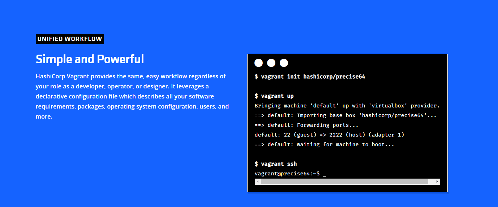
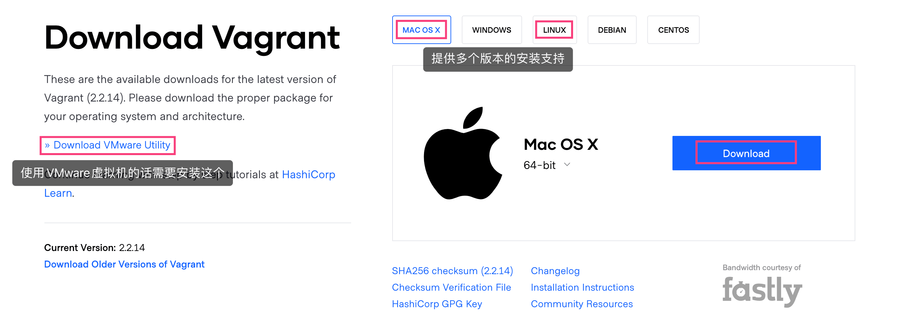
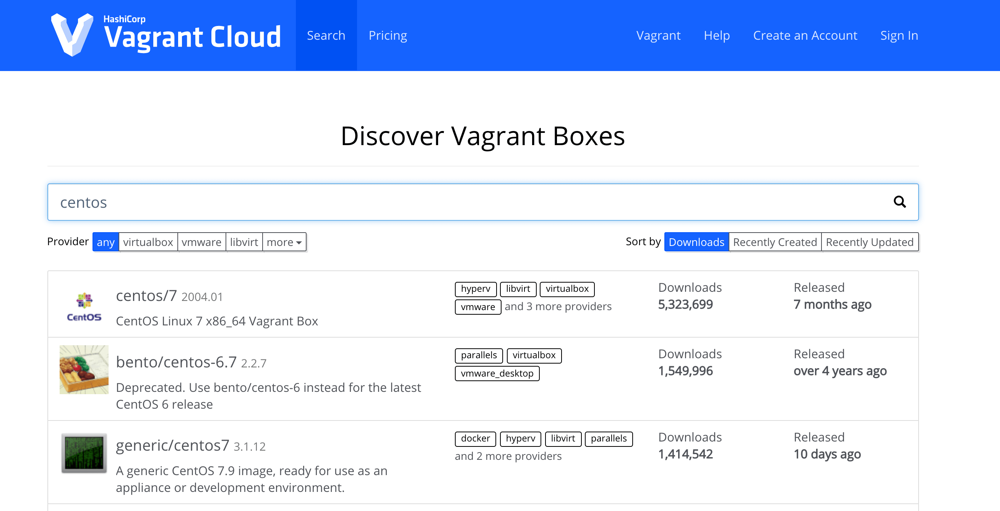
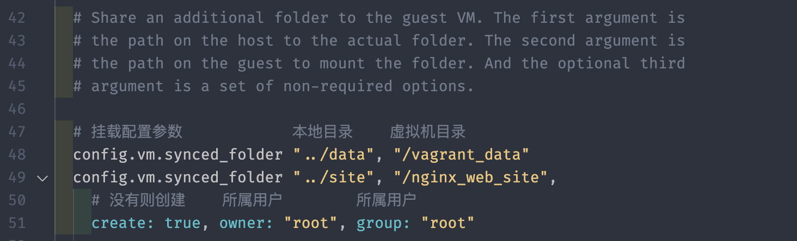
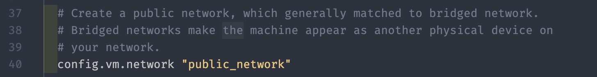
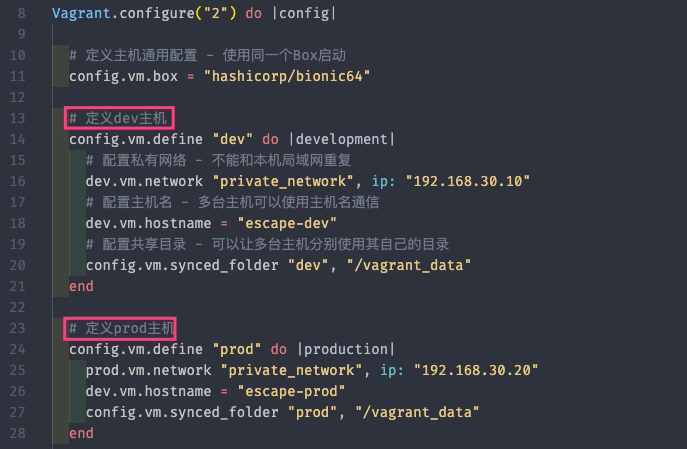

Vagrant 工具：我终于回来啦！
Vagrant 是一款用于构建及配置虚拟开发环境的软件，基于 Ruby 语言, 主要以命令行的方式运行。主要使用 Oracle 的开源 VirtualBox 作为虚拟化系统，与 Chef，Salt，Puppet 等环境配置管理软件搭配一起使用，可以实行快速虚拟开发环境的构建。
1. 工具介绍
Linux: Docker；MacOS: Vagrant

- [1] 解决痛点
如果我们本机使用的是 Windows 或 MacOS 的操作系统，但需要学习 Linux 操作系统的话，一般情况下都是通过安装虚拟机来完成。而有了 Vagrant 工具的话，我们就可以通过编写一个 Vagrantfile 的配置文件来控制虚拟机的启动、虚拟机网络环境的配置、虚拟机与主机间的文件共享等。
这就意味着，当你需要在多台机器间同步开发时，只需要同步 Vagrantfile 的配置即可，就可以保证各台机器拥有一致的开发环境。咳咳咳，当然我们这里还可以选择使用 Docker 工具，但是其在 Windows 或 MacOS 的操作系统上面，发挥不出来性能，很鸡肋！
与此同时，因为 Vagrant 使用 Vagrantfile 配置文件来启动和管理机器的，所以当我们有需求的时候，可以在网上下载别人已经编写好的配置文件，而不用我们自己从零开始编写了。然后运行vagrant up 命令，Vagrant 就会自动下载虚拟机镜像，自动加载镜像并配置虚拟机，然后生成一个即开即用的学习环境。
- [2] 区别介绍
这里我们主要说下 Vagrant 工具和 Docker 工具的异同之处，在介绍之后，我们可以根据自己的实际情况进行选择和使用。
相似之处是 Vagrant 和 Docker 都是虚拟化技术。Vagrant 是基于 Virtualbox 的虚拟机来构建你的开发环境，而 Docker 则是基于 LXC 的轻量级容器虚拟技术。虚拟机之于容器虚拟技术相当于进程和线程。虚拟机内可以包含很多容器，正如一个进程中可以包含很多线程。虚拟机重，容器虚拟技术轻。
说白了 Vagrant 就是一个普普通通的装了一个 Linux 的 VirtualBox 虚拟机，配以 Vagrant 团队为之开发的一系列套件，辅助完成诸如安装初始化、文件同步、ssh、部署环境升级、功能插件安装等等一些列问题的开发环境部署套件。也没什么好神秘的。
- [3] 不足之处
因为国内没有非常好的 Vagrant 资源提供商，所以 Vagrant 在国内基本没有办法正常使用(直接使用官方地址的话)。如果需要使用的话，要么自己提前下载到本地或者配置国内的各大源代理(Vagrantbox.es)，然后再使用。否则的话，慢的想去死的心都有。
2. 安装方式
安装方式非常的简单！
- 官网为我们提供好了多个操作系统的不同版本，我们只需要在其对应 官方下载地址 上面进行下载和安装即可，开始使用了。

# 证明安装正常
$ vagrant --help
Usage: vagrant [options] <command> [<args>]
-h, --help Print this help.
Common commands:
autocomplete manages autocomplete installation on host
box manages boxes: installation, removal, etc.
cloud manages everything related to Vagrant Cloud
destroy stops and deletes all traces of the vagrant machine
global-status outputs status Vagrant environments for this user
halt stops the vagrant machine
help shows the help for a subcommand
init initializes a new Vagrant environment by creating a Vagrantfile
login
package packages a running vagrant environment into a box
plugin manages plugins: install, uninstall, update, etc.
port displays information about guest port mappings
powershell connects to machine via powershell remoting
provision provisions the vagrant machine
push deploys code in this environment to a configured destination
rdp connects to machine via RDP
reload restarts vagrant machine, loads new Vagrantfile configuration
resume resume a suspended vagrant machine
snapshot manages snapshots: saving, restoring, etc.
ssh connects to machine via SSH
ssh-config outputs OpenSSH valid configuration to connect to the machine
status outputs status of the vagrant machine
suspend suspends the machine
up starts and provisions the vagrant environment
upload upload to machine via communicator
validate validates the Vagrantfile
version prints current and latest Vagrant version
winrm executes commands on a machine via WinRM
winrm-config outputs WinRM configuration to connect to the machine
For help on any individual command run `vagrant COMMAND -h`
Additional subcommands are available, but are either more advanced
or not commonly used. To see all subcommands, run the command
`vagrant list-commands`.
--[no-]color Enable or disable color output
--machine-readable Enable machine readable output
-v, --version Display Vagrant version
--debug Enable debug output
--timestamp Enable timestamps on log output
--debug-timestamp Enable debug output with timestamps
--no-tty Enable non-interactive output
# 命令自动补全
$ vagrant autocomplete install
Autocomplete installed at paths:
- /Users/escape/.zshrc
3. 简单使用
本节主要介绍 Vagrant 工具的命令行使用方式！
Vagrant 以二进制包的形式发布，当然我们也可以从源代码编译，适用于所有支持的平台和体系结构。
- [1] 启动和运行
配置任何 Vagrant 项目的第一步是创建一个 Vagrantfile。运行以下两个命令后，将在 VirtualBox 中拥有一个完全运行的虚拟机，该虚拟机运行 64 位 Ubuntu 18.04 LTS。
# 常见目录
$ mkdir vagrant_demo; cd vagrant_demo
# 初始化
$ vagrant init hashicorp/bionic64
# 启动虚拟机
$ vagrant up
# 查看状态
$ vagrant status
- [2] 停止和暂停
启动虚拟机之后，我们可以通过如下命令来管理虚拟机的状态。
# 停止虚拟机
$ vagrant halt
# 暂停虚拟机
$ vagrant suspend
# 恢复虚拟机
$ vagrant resume
# 重启虚拟机
$ vagrant reload
- [3] 远程和销毁
然后，可以使用 vagrant ssh 连接到这台机器上。当我们使用完毕的时候，就可以通过如下命令来销毁虚拟机。
# 远程连接
$ vagrant ssh
# 退出连接
$ exit
$ logout
$ CTRL+D
# 销毁虚拟机
$ vagrant destroy
- [4] 自定义打包
官方网站上面提供的 Vagrant 虚拟机如果无法满足我们的需求的话，通常我们也是不用自己重头开始建立虚拟机的。我们可以在基础镜像的基础上面，安装、配置、部署我们所需的内容之后，然后将其打包成为一个新的虚拟机。这样的话，我们就可以在后续使用的时候，直接使用我们打包好的虚拟机。
# 打包之前清理网络
# 目的是为了使用新包时网络启动问题
$ vagrant ssh
$ rm -rf /etc/udev/rules.d/70-persistent-net.rules
# 打包虚拟机
# 完成之后会生成一个package.box的文件
$ vagrant package
# 将新的虚拟机添加到列表中
$ vagrant add escape/bionic64 package.box
# 删除多余文件
$ rm package.box
# 使用新的Box初始化项目
$ vagrant init escape/bionic64
$ vagrant up
$ vagrant ssh
- [5] 虚拟机快照
快照的含义：对某一个特定文件系统在某一个特定时间内的一个具有只读属性的镜像。当你需要重复的返回到某一系统状态，又不想创建多个虚拟机的时候，就可以使用快照功能。
# 获取帮助信息
$ vagrant snapshot --help
# 存储快照
$ vagrant snapshot save save_point_1
==> default: Snapshotting the machine as 'save_point_1'...
==> default: Snapshot saved! You can restore the snapshot at any time by
# 恢复快照
$ vagrant snapshot restore save_point_1
==> default: Forcing shutdown of VM...
==> default: Restoring the snapshot 'save_point_1'...
# 列出快照
$ vagrant snapshot list
==> default:
save_point_1
# 删除快照
$ vagrant snapshot delete save_point_1
==> default: Deleting the snapshot 'save_point_1'...
==> default: Snapshot deleted!
# 存储快照并将其推入快照堆栈中
$ vagrant snapshot push
==> default: Snapshotting the machine as 'push_1608705591_3915'...
==> default: Snapshot saved! You can restore the snapshot at any time by
# 将弹出快照堆栈中并恢复快照
$ vagrant snapshot pop
==> default: Forcing shutdown of VM...
==> default: Restoring the snapshot 'push_1608705591_3915'...
==> default: Deleting the snapshot 'push_1608705591_3915'...
4. 使用进阶
主要介绍 Box 命令的概念和使用！
与从头构建虚拟机不同，
Vagrant使用基本映像快速克隆虚拟机。在Vagrant中，这些基本映像称为Box。Box其实就是某种操作系统的镜像文件，你也可以将其理解为是虚拟机的本身，我们可以添加需要的Box，也可以管理和删除对应Box。如果已经添加了所需的
Box的话，就可以在启动项目的时候，可以指定使用那个Box。而对于Box而言，我们可以自己来定义和创建，也可以使用网上其他人已经编辑好的Box，当然，我们一般都是选择后者，除非是我们没有找到对应的Box才会自动手动来做。
➜ vagrant box --help
Usage: vagrant box <subcommand> [<args>]
Available subcommands:
add
list
outdated
prune
remove
repackage
update
For help on any individual subcommand run `vagrant box <subcommand> -h`
--[no-]color Enable or disable color output
--machine-readable Enable machine readable output
-v, --version Display Vagrant version
--debug Enable debug output
--timestamp Enable timestamps on log output
--debug-timestamp Enable debug output with timestamps
--no-tty Enable non-interactive output
- 我们可以通过访问其 官方地址 进行下载，但是因为国内网络的问题，在没有代理的情况下还是非常慢的。所以，我们可以在添加
Box的时候，复制其下载地址，通过下载工具进行下载。

# 添加Box(需要选择适配的虚拟机类型)
$ vagrant box add hashicorp/bionic64
# 列出所有Box
$ vagrant box list
hashicorp/bionic64 (virtualbox, 1.0.282)
# 删除指定Box
$ vagrant box remove hashicorp/bionic64
# 更新指定Box
$ vagrant box update hashicorp/bionic64
# 打包指定Box
$ vagrant box repackage hashicorp/bionic64
# 使用Box初始化项目
# 初始化时将上述下载好的Box复制到虚拟机指定的目录下面
$ vagrant init hashicorp/bionic64
- 因为网速比较慢的缘故，我们可以通过执行
vagrant box add命令添加Box的时候，找到对应的下载地址，然后通过下载工具进行下载，然后再进行导入这样的操作，会好一些。
# 通过Motrix工具下载后重命名
# https://vagrantcloud.com/jpiel/boxes/ubuntu18.04/versions/2019.06.03.0/providers/virtualbox.box
$ mv xxxxxx virtualbox.box
# 导入Box文件到系统
$ vagrant box add --name jpiel/ubuntu18.04 virtualbox.box
# 为了方便的话也可以直接跟URL地址
$ vagrant box add --name jpiel/ubuntu18.04 https://vagrantcloud.com/xxx/virtualbox.box
# 查看Box列表
$ vagrant box list
jpiel/ubuntu18.04 (virtualbox, 0)
- 然后，正常启动，即可。
➜ vagrant up
Bringing machine 'default' up with 'virtualbox' provider...
==> default: Checking if box 'hashicorp/bionic64' version '1.0.282' is up to date...
==> default: Clearing any previously set forwarded ports...
==> default: Clearing any previously set network interfaces...
# 配置网络
==> default: Preparing network interfaces based on configuration...
default: Adapter 1: nat
==> default: Forwarding ports...
default: 22 (guest) => 2222 (host) (adapter 1)
# 启动虚拟机
==> default: Booting VM...
==> default: Waiting for machine to boot. This may take a few minutes...
default: SSH address: 127.0.0.1:2222
default: SSH username: vagrant
default: SSH auth method: private key
==> default: Machine booted and ready!
==> default: Checking for guest additions in VM...
default: The guest additions on this VM do not match the installed version of
default: VirtualBox! In most cases this is fine, but in rare cases it can
default: prevent things such as shared folders from working properly. If you see
default: shared folder errors, please make sure the guest additions within the
default: virtual machine match the version of VirtualBox you have installed on
default: your host and reload your VM.
default:
default: Guest Additions Version: 6.0.10
default: VirtualBox Version: 6.1
# 挂载和映射本地目录
==> default: Mounting shared folders...
default: /vagrant => /Users/escape/Vagrant
==> default: Machine already provisioned. Run `vagrant provision` or use the `--provision`
==> default: flag to force provisioning. Provisioners marked to run always will still run.
5. 相关配置
介绍 Vagrantfile 配置文件的相关常用配置！
相关插件对应文档 - Docs
配置文件查找顺序
/home/escape/projects/foo/Vagrantfile
/home/escape/projects/Vagrantfile
/home/escape/Vagrantfile
/home/Vagrantfile
/Vagrantfile
- 完整示例配置文件 - Vagrantfile
# -*- mode: ruby -*-
# vi: set ft=ruby :
# All Vagrant configuration is done below. The "2" in Vagrant.configure
# configures the configuration version (we support older styles for
# backwards compatibility). Please don't change it unless you know what
# you're doing.
Vagrant.configure("2") do |config|
# The most common configuration options are documented and commented below.
# For a complete reference, please see the online documentation at
# https://docs.vagrantup.com.
# Every Vagrant development environment requires a box. You can search for
# boxes at https://vagrantcloud.com/search.
config.vm.box = "hashicorp/bionic64"
# Disable automatic box update checking. If you disable this, then
# boxes will only be checked for updates when the user runs
# `vagrant box outdated`. This is not recommended.
# config.vm.box_check_update = false
# Create a forwarded port mapping which allows access to a specific port
# within the machine from a port on the host machine. In the example below,
# accessing "localhost:8080" will access port 80 on the guest machine.
# NOTE: This will enable public access to the opened port
# config.vm.network "forwarded_port", guest: 80, host: 8080
# Create a forwarded port mapping which allows access to a specific port
# within the machine from a port on the host machine and only allow access
# via 127.0.0.1 to disable public access
# config.vm.network "forwarded_port", guest: 80, host: 8080, host_ip: "127.0.0.1"
# Create a private network, which allows host-only access to the machine
# using a specific IP.
# config.vm.network "private_network", ip: "192.168.33.10"
# Create a public network, which generally matched to bridged network.
# Bridged networks make the machine appear as another physical device on
# your network.
# config.vm.network "public_network"
# Share an additional folder to the guest VM. The first argument is
# the path on the host to the actual folder. The second argument is
# the path on the guest to mount the folder. And the optional third
# argument is a set of non-required options.
# config.vm.synced_folder "../data", "/vagrant_data"
# Provider-specific configuration so you can fine-tune various
# backing providers for Vagrant. These expose provider-specific options.
# Example for VirtualBox:
#
# config.vm.provider "virtualbox" do |vb|
# # Display the VirtualBox GUI when booting the machine
# vb.gui = true
#
# # Customize the amount of memory on the VM:
# vb.memory = "1024"
# end
#
# View the documentation for the provider you are using for more
# information on available options.
# Enable provisioning with a shell script. Additional provisioners such as
# Ansible, Chef, Docker, Puppet and Salt are also available. Please see the
# documentation for more information about their specific syntax and use.
# config.vm.provision "shell", inline: <<-SHELL
# apt-get update
# apt-get install -y apache2
# SHELL
end
- [1] 配置共享目录
我们可以在启动的时候看到，目录会将我们本地的一个目录映射和挂载到 vagrant 创建的虚拟机中去，如果我们需要改变或者挂载其他目录时，可以修改配置文件来完成。

config.vm.synced_folder "../data", "/vagrant_data"
config.vm.synced_folder "../site", "/nginx_web_site",
create: true, owner: "root", group: "root"
如果我们在虚拟机上面安装和配置了一个 Nginx 的 Web 服务器，此时需要在我们本机打开虚拟机对应的网站，或者提供给整个网络的其他设备上面也可以访问的话，这就需要我们配置虚拟机网络了。在 vagrant 上面提供了，三种网络的配置方式，分别是私有网络、公有网络和端口转发。
端口转发，顾名思义，就是将虚拟机中的端口端口映射到本地上，比如将虚拟机中的 80 端口，转发到本机的 8080 端口上，这时就可以通过访问本机的 8080 端口来访问虚拟机中的 Web 服务了。
guest为虚拟机的端口；host为宿主的端口
Vagrant.configure("2") do |config|
config.vm.network "forwarded_port", guest: 80, host: 8080
config.vm.network "forwarded_port", guest: 2003, host: 12003, protocol: "tcp"
config.vm.network "forwarded_port", guest: 2003, host: 12003, protocol: "udp"
config.vm.network "forwarded_port", guest: 80, host: 8080, auto_correct: true
config.vm.usable_port_range = 8000..8999
end
- [2] 私有网络 - host-only
私有网络，就是给虚拟机在配置文件中手动指定一个 IP 地址，通过配置的这个 IP 地址，我们本机和虚拟机进行通讯。需要注意的时候，只能在我们这台电脑进行访问。
Vagrant.configure("2") do |config|
# DHCP
config.vm.network "private_network", type: "dhcp"
# Static IP
config.vm.network "private_network", ip: "192.168.33.10"
config.vm.network "private_network", ip: "192.168.33.10", auto_config: false
# IPv6
config.vm.network "private_network", ip: "fde4:8dba:82e1::c4"
config.vm.network "private_network", ip: "fde4:8dba:82e1::c4", netmask: "96"
end
- [3] 公共网络 - bridged
公有网络，会把虚拟机配置成一台可以在同一网络里面访问的设备，即我们局域网中所有的服务器都可以与虚拟机进行通讯和互联。需要注意的是，我们需要登录虚拟机来查看路由器给其分配的 IP 地址。

Vagrant.configure("2") do |config|
# DHCP
config.vm.network "public_network"
config.vm.network "public_network", auto_config: false
# Static IP
config.vm.network "public_network", ip: "192.168.0.17"
# Default Network Interface
config.vm.network "public_network", bridge: "en1: Wi-Fi (AirPort)"
end
# Disable Auto-Configuration
Vagrant.configure("2") do |config|
config.vm.network "public_network", auto_config: false
# manual ip
config.vm.provision "shell",
run: "always",
inline: "ifconfig eth1 192.168.0.17 netmask 255.255.255.0 up"
# manual ipv6
config.vm.provision "shell",
run: "always",
inline: "ifconfig eth1 inet6 add fc00::17/7"
end
# Default Router
Vagrant.configure("2") do |config|
config.vm.network "public_network", ip: "192.168.0.17"
# default router
config.vm.provision "shell",
run: "always",
inline: "route add default gw 192.168.0.1"
# default router ipv6
config.vm.provision "shell",
run: "always",
inline: "route -A inet6 add default gw fc00::1 eth1"
# delete default gw on eth0
config.vm.provision "shell",
run: "always",
inline: "eval `route -n | awk '{ if ($8 ==\"eth0\" && $2 != \"0.0.0.0\") print \"route del default gw \" $2; }'`"
end
有时，我们的实验环境或者项目不仅仅需要一台服务，而是需要多个服务器上分别部署不同的服务，进行协同工作，比如部署一个最小的 K8S 集群(三台服务)。当然，Vagrant 也是支持，我们在配置文件中进行多主机的配置，比如配置网络、共享目录、主机名等等。
- [4] 多主机配置
# 使用新的Box初始化项目
$ mkdir k8s-demo; cd k8s-demo
$ vagrant init hashicorp/bionic64
$ vim Vagrantfile

Vagrant.configure("2") do |config|
# 定义主机通用配置 - 使用同一个Box启动
config.vm.box = "hashicorp/bionic64"
# 指定具体版本；不自动更新；可选参数
config.vm.box_version = "1.0.282"
# 可指定具体的URL项目地址；可选参数
config.vm.box_url = "https://vagrantcloud.com/hashicorp/bionic64"
# 可指定预先执行的脚本；可选参数
config.vm.provision :shell, path: "bootstrap.sh"
node.vm.provision "shell", inline: "echo hello from escape."
# 可配置端口转发；可选参数
config.vm.network :forwarded_port, guest: 80, host: 4567
# 定义dev主机
config.vm.define "dev" do |development|
# 配置私有网络 - 不能和本机局域网重复
dev.vm.network "private_network", ip: "192.168.30.10"
# 配置主机名
dev.vm.hostname = "escape-dev"
# 配置共享目录 - 可以让多台主机分别使用其自己的目录
config.vm.synced_folder "dev", "/vagrant_data"
end
# 定义prod主机
config.vm.define "prod" do |production|
prod.vm.network "private_network", ip: "192.168.30.20"
dev.vm.hostname = "escape-prod"
config.vm.synced_folder "prod", "/vagrant_data"
end
end
# 启动全部或一台
$ vagrant up
$ vagrant up dev
$ vagrant up prod
# 连接其中的一台
$ vagrant ssh dev
$ vagrant ssh prod
6. 常用插件
这里介绍其常用的插件的功能和使用方式！
官方插件对应地址 - Plugins
➜ vagrant plugin --help
Usage: vagrant plugin <command> [<args>]
Available subcommands:
expunge
install
license
list
repair
uninstall
update
For help on any individual command run `vagrant plugin COMMAND -h`
--[no-]color Enable or disable color output
--machine-readable Enable machine readable output
-v, --version Display Vagrant version
--debug Enable debug output
--timestamp Enable timestamps on log output
--debug-timestamp Enable debug output with timestamps
--no-tty Enable non-interactive output
- [1] 主机名管理插件 - vagrant-hostmanager
可以使多台主机使用主机名通信
# 安装插件
$ vagrant plugin install vagrant-hostmanager
# 更新主机和虚拟机的hosts文件
$ vagrant hostmanager
# 现在可以使用主机名连接虚拟机
$ vagrant ssh node1
Vagrant.configure("2") do |config|
config.vm.box = "centos/7"
# 启用hostmanager插件
config.hostmanager.enabled = true
# 表示更新主机上的hosts文件
config.hostmanager.manage_host = true
# 表示更新虚拟机上的hosts文件
config.hostmanager.manage_guest = true
config.vm.define "node1" do |node1|
node1.vm.network "private_network", ip: "192.168.30.10"
node1.vm.hostname = "node1"
end
config.vm.define "node2" do |node2|
node2.vm.network "private_network", ip: "192.168.30.20"
node2.vm.hostname = "node2"
end
config.vm.define "node3" do |node3|
node3.vm.network "private_network", ip: "192.168.30.30"
node3.vm.hostname = "node3"
end
end
- [2] 更新虚拟机插件 - vagrant-vbguest
有些 Virualbox 类型的 Box 无法设置共享目录，这是因为 Box 里面没有安装对应的插件导致的。使用 vbguest 插件即可解决此问题。
# 安装插件
$ vagrant plugin install vagrant-vbguest
# 查看虚拟机是否安装了此插件
$ vagrant vbguest --status
# 为虚拟机安装此插件
$ vagrant vbguest --do install
$ vagrant vbguest --do install node1
Vagrant.configure("2") do |config|
config.vm.box = "centos/7"
config.hostmanager.enabled = true
config.hostmanager.manage_host = true
config.hostmanager.manage_guest = true
# 禁用vbguest自动更新机制
config.vbguest.auto_update = false
config.vm.define "node1" do |node1|
node1.vm.network "private_network", ip: "192.168.30.10"
node1.vm.hostname = "node1"
end
config.vm.define "node2" do |node2|
node2.vm.network "private_network", ip: "192.168.30.20"
node2.vm.hostname = "node2"
end
config.vm.define "node3" do |node3|
node3.vm.network "private_network", ip: "192.168.30.30"
node3.vm.hostname = "node3"
end
end
- [3] NFS 共享目录插件 - vagrant-bindfs
Vagrant 支持多种类型的主机与虚拟机之间的共享目录，如果我们使用的是 Virualbox 类型的 Box 的话，默认使用的就是其自带的类型，这种文件系统的性能比较慢。
如果需要提升性能的话，可以使用 NFS 类型来完成共享目录，但是在启动的时候会有权限相关的问题，这时就可以使用 bindfs 查看来解决此问题了。解决的方式就是通过，创建一个中间层来完成主机和虚拟机的文件共享。
# 安装插件
$ vagrant plugin install vagrant-bindfs
# NFS
Vagrant.configure("2") do |config|
config.vm.box = "centos/7"
config.hostmanager.enabled = true
config.hostmanager.manage_host = true
config.hostmanager.manage_guest = true
config.vbguest.auto_update = false
config.vm.define "node1" do |node1|
node1.vm.network "private_network", ip: "192.168.30.10"
node1.vm.hostname = "node1"
# 这里的"/mnt/app_data"就是中间层，用来连接主机和虚拟机
node1.vm.synced_folder "./app", "/mnt/app_data", type: "nfs"
node1.bindfs.bind_floder "/mnt/app_data", "/app",
force_user: "root", force_group: "root", o: "nonempty"
end
end
# Rsync
Vagrant.configure("2") do |config|
config.vm.synced_folder ".", "/vagrant", type: "rsync",
rsync__exclude: ".git/"
end
Vagrant.configure("2") do |config|
config.vm.synced_folder "bin", "/usr/local/bin", type: "rsync",
rsync__exclude: ".git/",
rsync__args: ["--verbose", "--rsync-path='sudo rsync'", "--archive", "--delete", "-z"]
end
- [4] 共享环境 - vagrant-share
- 需要事先安装
ngrok工具，登录并授权码
- 需要事先安装
现在已经有了一个正在运行的 Web 服务器，并可以在本机进行访问。但是，除了提供一个开发环境之外，Vagrant 还使得在这些环境中共享和协作变得容易，我们可以使用 Share 这个插件来完成。Vagrant Share 是一个插件，可以让您将您的 Vagrant 环境分享给世界上任何有互联网连接的人。它会给你一个 URL，可以从世界上任何连接到互联网的设备直接路由到你的环境。
# 安装插件
$ vagrant plugin install vagrant-share
Installing the 'vagrant-share' plugin. This can take a few minutes...
Fetching vagrant-share-1.1.10.gem
Installed the plugin 'vagrant-share (1.1.10)'!
# ngrok设置授权码
# $ ./ngrok authtoken xxxxxx
Authtoken saved to configuration file: /Users/escape/.ngrok2/ngrok.yml
# 分享 - HTTP Sharing
$ vagrant share
==> default: Detecting network information for machine...
default: Local machine address: 192.168.84.130
default: Local HTTP port: 9999
default: Local HTTPS port: disabled
==> default: Creating Vagrant Share session...
==> default: HTTP URL: http://b1fb1f3f.ngrok.io
# 连接
$ vagrant connect http://b1fb1f3f.ngrok.io
# 终止
$ ^C
==> default: Halting Vagrant share!
如果你想让同事访问你的 SSH，以便对 ops 问题进行故障排除，那么简单的 SSH 共享是非常有用的。此外，SSH 共享在默认情况下是禁用的，要启用 SSH 共享，只需在调用 vagrant share 时提供 --ssh 标志。
# 分享 - SSH Sharing
$ vagrant share --ssh
==> default: Detecting network information for machine...
default: Local machine address: 192.168.84.130
==> default: Generating new SSH key...
default: Please enter a password to encrypt the key:
......
==> share: vagrant connect --ssh bazaar_wolf:sultan_oasis
# 连接
$ vagrant connect --ssh bazaar_wolf:sultan_oasis
Loading share 'bazaar_wolf:sultan_oasis'...
# 终止
$ ^C
==> default: Halting Vagrant share!
- [5] docker-compose 支持 - vagrant-docker-compose
安装该插件之后，可以在启动的时候执行 docker-compose 命令来启动对应容器服务。
# To install docker and docker-compose
Vagrant.configure("2") do |config|
config.vm.box = "ubuntu/bionic64"
config.vm.provision :docker
config.vm.provision :docker_compose
end
# To install and run docker-compose on vagrant up
# Equivalent to running: docker-compose -f [yml] up -d
Vagrant.configure("2") do |config|
config.vm.box = "ubuntu/bionic64"
config.vm.provision :docker
config.vm.provision :docker_compose, yml: "/vagrant/docker-compose.yml", run: "always"
end
# To install and run docker-compose, with multiple files, on vagrant up
# Equivalent to running: docker-compose -f [yml-0] -f [yml-1] ... up -d
Vagrant.configure("2") do |config|
config.vm.box = "ubuntu/bionic64"
config.vm.provision :docker
config.vm.provision :docker_compose,
yml: [
"/vagrant/docker-compose-base.yml",
"/vagrant/docker-compose.yml",
...
],
run: "always"
end
7. 参考链接
送人玫瑰，手有余香！